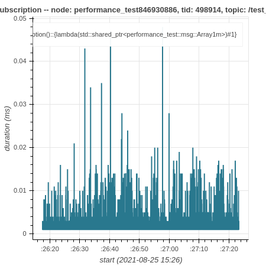

How to use ros2_tracing to trace and analyze an application
This guide shows how to use ros2_tracing to trace and analyze a ROS 2 application.
For this guide, the application will be performance_test.
Overview
This guide covers:
installing tracing-related tools and building ROS 2 with the core instrumentation enabled
running and tracing a
performance_testrunanalyzing the trace data using
tracetools_analysisto plot the callback durations
Prerequisites
This guide is aimed at real-time systems. See the real-time system setup guide. However, the guide will work if you are using a non-real-time system.
Note
This guide was written for ROS 2 Rolling on Ubuntu 20.04. It should work on other ROS 2 distros or Ubuntu versions, but some things might need to be adjusted.
Installing and building
First, make sure you have installed all dependencies for ROS 2 Rolling.
Install LTTng as well as babeltrace.
We will only install the LTTng userspace tracer.
$ sudo apt-get update
$ sudo apt-get install -y lttng-tools liblttng-ust-dev python3-lttng python3-babeltrace babeltrace
Then create a workspace, import the ROS 2 Rolling code, and clone performance_test and tracetools_analysis.
$ cd ~/
$ mkdir -p tracing_ws/src
$ cd tracing_ws/
$ vcs import src/ --input https://raw.githubusercontent.com/ros2/ros2/master/ros2.repos
$ cd src/
$ git clone https://gitlab.com/ApexAI/performance_test.git
$ git clone https://gitlab.com/ros-tracing/tracetools_analysis.git
$ cd ..
Install dependencies with rosdep.
$ rosdep update
$ rosdep install --from-paths src --ignore-src -y --skip-keys "fastcdr rti-connext-dds-6.0.1 urdfdom_headers"
Then build up to performance_test and configure it for ROS 2.
See its documentation.
We also need to build ros2trace to set up tracing using the ros2 trace command and tracetools_analysis to analyze the data.
$ colcon build --packages-up-to ros2trace tracetools_analysis performance_test --cmake-args -DPERFORMANCE_TEST_RCLCPP_ENABLED=ON
You should see the following message once tracetools is done building:
LTTng found: tracing enabled
This confirms that LTTng was properly detected and that the instrumentation built into the ROS 2 core is enabled.
Next, we will run a performance_test experiment and trace it.
Tracing
Start an LTTng session daemon.
For userspace tracing, the daemon does not need to be started as root.
Note that a non-root daemon will be spawned automatically by ros2 trace if it is not already running.
$ lttng-sessiond --daemonize
In one terminal, source the workspace and setup tracing.
We need to explicitly use the --kernel option with no values to disable kernel tracing, since we did not install the kernel tracer.
When running the command, a list of ROS 2 userspace events will be printed.
It will also print the path to the directory that will contain the resulting trace (under ~/.ros/tracing).
Press enter to start tracing.
$ # terminal 1
$ cd ~/tracing_ws
$ source install/setup.bash
$ ros2 trace --session-name perf-test --kernel --list
In a second terminal, source the workspace.
$ # terminal 2
$ cd ~/tracing_ws
$ source install/setup.bash
Then run the performance_test experiment.
We simply create an experiment with a node publishing ~1 MB messages to another node as fast as possible for 60 seconds using the second highest real-time priority so that we don’t interfere with critical kernel threads.
We need to run performance_test as root to be able to use real-time priorities.
$ # terminal 2
$ sudo ./install/performance_test/lib/performance_test/perf_test -c rclcpp-single-threaded-executor -p 1 -s 1 -r 0 -m Array1m --reliability RELIABLE --max-runtime 60 --use-rt-prio 98
If that last command doesn’t work for you (with an error like: “error while loading shared libraries”), run the slightly-different command below.
This is because, for security reasons, we need to manually pass *PATH environment variables for some shared libraries to be found (see this explanation).
$ # terminal 2
$ sudo env PATH="$PATH" LD_LIBRARY_PATH="$LD_LIBRARY_PATH" ./install/performance_test/lib/performance_test/perf_test -c rclcpp-single-threaded-executor -p 1 -s 1 -r 0 -m Array1m --reliability RELIABLE --max-runtime 60 --use-rt-prio 98
Note
If you’re not using a real-time kernel, simply run:
$ # terminal 2
$ ./install/performance_test/lib/performance_test/perf_test -c rclcpp-single-threaded-executor -p 1 -s 1 -r 0 -m Array1m --reliability RELIABLE --max-runtime 60
Once the experiment is done, in the first terminal, press enter again to stop tracing.
Use babeltrace to quickly look at the resulting trace.
$ babeltrace ~/.ros/tracing/perf-test
The output of the above command is a human-readable version of the raw Common Trace Format (CTF) data, which is a list of trace events. Each event has a timestamp, an event type, some information on the process that generated the event, and the values of the fields of the given event type.
Next, we will analyze the trace.
Analysis
tracetools_analysis provides a Python API to easily analyze traces.
We can use it in a Jupyter notebook with bokeh to plot the data.
The tracetools_analysis repository contains a few sample notebooks, including one notebook to analyze subscription callback durations.
For this guide, we will plot the durations of the subscription callback in the subscriber node.
Install Jupyter notebook and bokeh, and then open the sample notebook.
$ sudo apt-get install -y jupyter-notebook
$ pip3 install bokeh
$ jupyter notebook ~/tracing_ws/src/tracetools_analysis/tracetools_analysis/analysis/callback_duration.ipynb
This will open the notebook in the browser.
Replace the value for the path variable in the second cell to the path to the trace directory:
path = '~/.ros/tracing/perf-test'
Run the notebook by clicking the Run button for each cell. Running the cell that does the trace processing might take a few minutes on the first run, but subsequent runs will be much quicker.
You should get a plot that looks like this:

We can see that most of the callbacks take less than 0.01 ms, but there are some outliers taking over 0.02 or 0.03 ms.
Conclusion
This guide showed how to install tracing-related tools and build ROS 2 with tracing instrumentation.
Then it showed how to trace a performance_test experiment using ros2_tracing and plot the callback durations using tracetools_analysis.
For more trace analyses, take a look at the other sample notebooks and the tracetools_analysis API documentation.
The ros2_tracing design document also contains a lot of information.